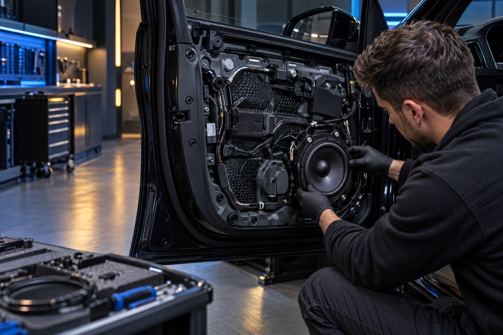

01 / Audio
Car Audio Installation
Thoughtful speaker, amplifier, subwoofer and system integration work designed around the vehicle and listening goals.
Automotive Services / Fremont
Thoughtful automotive upgrades for the way your vehicle sounds, feels and carries the details that matter to you.
What we do
Automotive upgrades should suit the vehicle, the daily use and the visual language of the interior. The approach stays grounded in fit, integration and finish.

01 / Audio
Thoughtful speaker, amplifier, subwoofer and system integration work designed around the vehicle and listening goals.
02 / Lighting
Refined interior illumination for dashboard, doors and cabin details with a clean, considered finish.
03 / Comfort
Sound-deadening and insulation work that can support a more controlled cabin environment and audio foundation.
What it is
The components matter, but the way they meet the vehicle matters just as much. A clean installation considers trim, wiring paths, serviceability, mounting, fit and how the result feels once the car is back in daily use.
Share the system or effect you have in mind, and Reverso Works can help define a practical next conversation.
Our Process
Talk through the vehicle, the desired experience and the equipment or direction you are considering.
Review mounting, wiring, surface preparation and the interior areas involved in the work.
Carry out the installation with attention to routing, trim, material and visual finish.
Review the completed installation and the next useful care or adjustment step.
Other automotive services
Discuss a practical low-frequency system direction and the vehicle space it needs.
Explore thoughtful lighting and cabin detail work to complement an existing interior.
Consider targeted acoustic treatment where panel resonance or cabin noise is part of the goal.
Have a specific automotive idea? Start with the vehicle, reference material and intended result.
Service gallery
Portfolio placeholders. Replace these images with completed Reverso Works installations as approved project photography becomes available.
Start with the vehicle